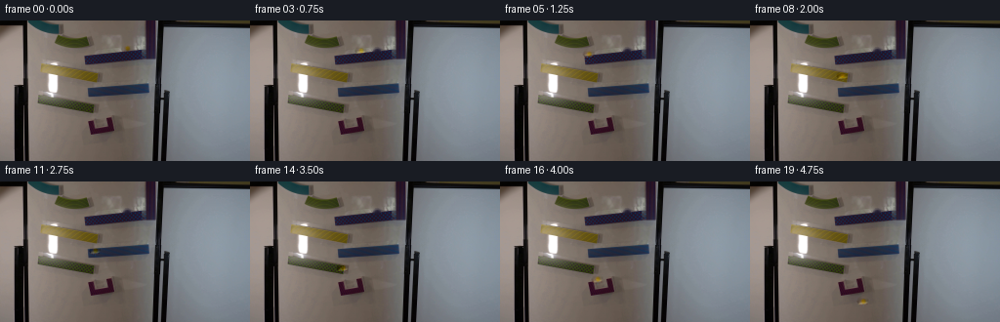
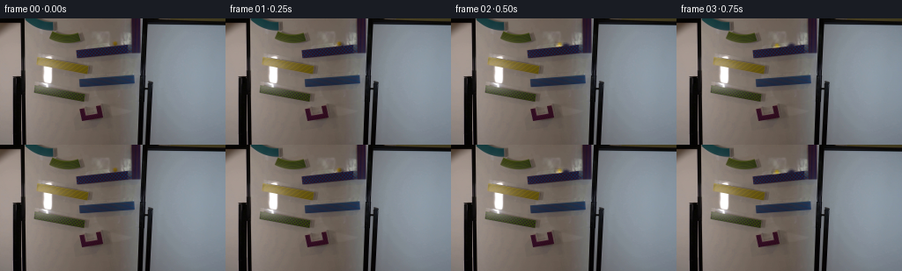

CODING AGENTS AS PIXEL WORLD MODELS
traex/GPT-5.6-Sol · 0108
点击播放 · 原生 RGB 像素
逐轮保存的候选
回放视频、检查图与代码变化。
每份候选均可单独播放。实际图片检查记录在下方工具轨迹中。
候选 01播放与检查图
点击播放 · 原生 RGB 像素


展开代码变化
--- 上一保存版本
+++ 本次保存版本
@@ -0,0 +1,108 @@
+"""Generate the locked-off magnetic marble-run sequence.
+
+The source photograph is retained as the plate. The marble in the source is
+separated from a locally reconstructed plate and translated along the visible
+ramps. Keeping the photographed marble as a signed RGB detail layer makes the
+very small (about 8 px) glass sphere retain the source lighting/refraction.
+"""
+from pathlib import Path
+
+import cv2
+import numpy as np
+from PIL import Image
+
+import artifact_io
+
+
+HERE = Path(__file__).resolve().parent
+
+
+def clean_marble_plate(source: np.ndarray) -> tuple[np.ndarray, np.ndarray]:
+ """Return a plate without the initial marble and its signed detail layer."""
+ # The yellow glass marble in frame zero is centred near (129.5, 27.5).
+ # A softly elliptical mask includes its dim edge and contact shadow while
+ # excluding the nearby magnetic-ramp structure as much as possible.
+ h, w = source.shape[:2]
+ yy, xx = np.mgrid[:h, :w]
+ mask = ((((xx - 129.5) / 5.8) ** 2 + ((yy - 27.6) / 5.5) ** 2) <= 1.0)
+ mask_u8 = (mask.astype(np.uint8) * 255)
+
+ # TELEA follows the low-frequency board/ramp colours around this tiny mask.
+ bgr = source[:, :, ::-1].copy()
+ clean_bgr = cv2.inpaint(bgr, mask_u8, 3.0, cv2.INPAINT_TELEA)
+ clean = clean_bgr[:, :, ::-1].astype(np.float32)
+
+ # The signed layer exactly encodes the photographed sphere against the
+ # reconstructed plate. A one-pixel taper avoids a cut-out edge after a
+ # non-integral translation.
+ feather = cv2.GaussianBlur(mask_u8.astype(np.float32) / 255.0, (0, 0), 0.45)
+ feather = np.clip(feather, 0.0, 1.0)[..., None]
+ detail = (source.astype(np.float32) - clean) * feather
+ return clean, detail
+
+
+def shifted_detail(detail: np.ndarray, dx: float, dy: float) -> np.ndarray:
+ h, w = detail.shape[:2]
+ matrix = np.array([[1.0, 0.0, dx], [0.0, 1.0, dy]], np.float32)
+ return cv2.warpAffine(
+ detail,
+ matrix,
+ (w, h),
+ flags=cv2.INTER_CUBIC,
+ borderMode=cv2.BORDER_CONSTANT,
+ borderValue=0,
+ )
+
+
+def make_frames() -> np.ndarray:
+ source = np.asarray(Image.open(HERE / "first_frame.png").convert("RGB"), dtype=np.uint8)
+ assert source.shape == (144, 256, 3)
+ clean, marble_detail = clean_marble_plate(source)
+
+ # At 4 fps these positions describe a continuous real-time descent. The
+ # first run is the long upper-right ramp; the subsequent short alternating
+ # runs and drops follow the staggered magnetic ramps visible near the
+ # centre of the whiteboard. The small downward jumps occur at open ramp
+ # ends, with increasing displacement while airborne.
+ positions = np.array(
+ [
+ (129.5, 27.6), # source position; frame 0 itself is copied exactly
+ (127.8, 27.8),
+ (122.2, 28.5),
+ (112.8, 29.8),
+ (101.0, 31.5),
+ (90.2, 33.4), # end of upper ramp
+ (86.8, 39.6), # free fall
+ (87.6, 53.0), # contact with yellow ramp
+ (94.0, 55.5),
+ (99.2, 58.2), # its right end
+ (100.0, 65.8), # drop to the blue return ramp
+ (96.6, 69.8),
+ (91.2, 72.8), # left end
+ (90.9, 81.0), # drop to the green ramp
+ (94.2, 87.5),
+ (98.0, 91.0), # right end
+ (99.0, 99.0), # drop onto bottom ramp
+ (105.2, 104.0),
+ (112.8, 110.5),
+ (115.0, 121.8), # leaves the final ramp, continuing downward
+ ],
+ dtype=np.float32,
+ )
+
+ origin = positions[0]
+ frames = []
+ for index, (x, y) in enumerate(positions):
+ if index == 0:
+ # Contract requirement: byte-for-byte identical first frame.
+ frame = source.copy()
+ else:
+ layer = shifted_detail(marble_detail, float(x - origin[0]), float(y - origin[1]))
+ frame = np.clip(clean + layer, 0, 255).round().astype(np.uint8)
+ frames.append(frame)
+ return np.stack(frames, axis=0)
+
+
+if __name__ == "__main__":
+ frames = make_frames()
+ artifact_io.save(frames, HERE)
可观测工具轨迹
实际执行的命令与返回图片。
命令 1exit 0
/bin/bash -lc "cat GENERATION_RULES.md && printf '\\n--- PROMPT ---\\n' && cat prompt.txt"
命令 2exit 127
/bin/bash -lc "find . -maxdepth 2 -type f -printf '%p\\n' | sort && printf '\\n--- IMAGE ---\\n' && file first_frame.png && identify -verbose first_frame.png | sed -n '1,80p'"
命令 3exit 0
/bin/bash -lc "python3 - <<'PY' import importlib.util for m in ['cv2','numpy','PIL','imageio','scipy','skimage']: print(m, bool(importlib.util.find_spec(m))) PY ffmpeg -version | head -n 3"
命令 4exit 0
/bin/bash -lc 'cat artifact_io.py'
命令 5exit 0
/bin/bash -lc "python3 - <<'PY'
from PIL import Image
import numpy as np
im=np.array(Image.open('first_frame.png').convert('RGB'))
print(im.shape,im.dtype,im.min(),im.max())
# global/color regions
for name,a in [('all',im),('top',im[:48]),('mid',im[48:96]),('bot',im[96:])]:
print(name,'mean',a.mean((0,1)).round(1),'med',np.median(a.reshape(-1,3),0),'std',a.std((0,1)).round(1))
# most common quantized colors
q=(im//16)*16+8
u,c=np.unique(q.reshape(-1,3),axis=0,return_counts=True)
for ix in np.argsort(c)[-20:][::-1]:print(c[ix],u[ix])
# yellow likely mask bbox/components rough
r,g,b=im[...,0],im[...,1],im[...,2]
for nm,m in [('yellow',(r>120)&(g>80)&(r>b*1.35)&(g>b*1.15)),('dark',im.mean(2)<50),('sat',im.max(2)-im.min(2)>70)]:
yy,xx=np.where(m)
print(nm,len(xx),'bbox', (xx.min(),yy.min(),xx.max(),yy.max()) if len(xx) else None)
# count per rows/cols peaks
print('row peaks',sorted(enumerate(np.bincount(yy,minlength=144)),key=lambda x:x[1],reverse=True)[:12])
print('col peaks',sorted(enumerate(np.bincount(xx,minlength=256)),key=lambda x:x[1],reverse=True)[:12])
PY"命令 6exit 0
/bin/bash -lc "python3 - <<'PY'
import cv2,numpy as np
im=cv2.imread('first_frame.png')
g=cv2.cvtColor(im,cv2.COLOR_BGR2GRAY)
# edge + lines
edge=cv2.Canny(g,70,150)
lines=cv2.HoughLinesP(edge,1,np.pi/180,threshold=16,minLineLength=12,maxLineGap=4)
res=[]
for l in lines[:,0]:
x1,y1,x2,y2=map(int,l); L=np.hypot(x2-x1,y2-y1); a=np.degrees(np.arctan2(y2-y1,x2-x1))
res.append((L,a,(x1,y1,x2,y2)))
for z in sorted(res,reverse=True)[:100]:print('%5.1f %6.1f'%z[:2],z[2])
PY"命令 7exit 0
/bin/bash -lc "python3 - <<'PY'
from PIL import Image
import numpy as np
im=np.array(Image.open('first_frame.png').convert('RGB'))
# print coarse ANSI-independent color symbols 4x4 blocks. categories by means and saturation
for y in range(0,144,3):
s=''
for x in range(0,256,4):
c=np.mean(im[y:y+3,x:x+4],axis=(0,1)); mx=c.max(); mn=c.min(); lum=c.mean()
if lum<30:z='#'
elif lum<55:z='X'
elif lum<80:z='x'
elif lum<105:z=':'
elif lum<130:z='.'
elif lum<155:z='o'
elif lum<180:z='O'
else:z=' '
if c[0]>c[2]+25 and c[1]>c[2]+15 and c[0]>100:z='Y'
elif c[0]>c[1]+25 and c[0]>c[2]+25:z='R'
elif c[2]>c[0]+25:z='B'
elif c[1]>c[0]+20:z='G'
s+=z
print(f'{y:03}',s)
PY"命令 8exit 0
/bin/bash -lc "python3 - <<'PY'
import cv2,numpy as np
im=cv2.imread('first_frame.png')[:,:,::-1]; r,g,b=np.moveaxis(im,2,0)
m=(r>110)&(g>75)&(r>b*1.25)&(g>b*1.05)&((r.astype(int)+g.astype(int)-2*b.astype(int))>45)
n,lab,st,cent=cv2.connectedComponentsWithStats(m.astype('uint8'),8)
for i in np.argsort(st[1:,4])[::-1][:30]+1:print(i,st[i].tolist(),cent[i].round(2))
# inspect 25:145 x 18:75 with categorical per pixel 2x2
print('detail:')
for y in range(18,78,2):
s=''
for x in range(25,150,2):
c=im[y:y+2,x:x+2].mean((0,1)); lum=c.mean()
if lum<30:z='#'
elif lum<55:z='X'
elif lum<80:z='x'
elif lum<105:z=':'
elif lum<130:z='.'
elif lum<155:z='o'
elif lum<180:z='O'
else:z=' '
if c[0]>c[2]+30 and c[1]>c[2]+20 and c[0]>100:z='Y'
elif c[0]>c[1]+30 and c[0]>c[2]+30:z='R'
elif c[2]>c[0]+30:z='B'
s+=z
print(f'{y:03}',s)
PY"命令 9exit 0
/bin/bash -lc "python3 - <<'PY'
from PIL import Image
import numpy as np
im=np.array(Image.open('first_frame.png').convert('RGB')); r,g,b=np.moveaxis(im,2,0)
# detailed yellow/chroma structure: classify dominant exact pixels x35:95 y35:70
for y in range(34,72):
s=''
for x in range(34,101):
R,G,B=map(int,im[y,x]); lum=(R+G+B)/3
if R>110 and G>70 and R>1.25*B and G>1.05*B and R+G-2*B>45: z='Y'
elif max(R,G,B)-min(R,G,B)>45:z='c'
elif lum<30:z='#'
elif lum<55:z='X'
elif lum<80:z='x'
elif lum<105:z=':'
elif lum<130:z='.'
elif lum<155:z='o'
elif lum<180:z='O'
else:z=' '
s+=z
print(f'{y:03} {s}')
# row spans yellow
m=(r>110)&(g>70)&(r>b*1.25)&(g>b*1.05)&((r.astype(int)+g.astype(int)-2*b.astype(int))>45)
for y in range(20,75):
xs=np.where(m[y])[0]
if len(xs):print(y,len(xs),xs.min(),xs.max(),[(a,len(list(gr))) for a,gr in __import__('itertools').groupby(np.diff(xs))][:3])
# RGB central exemplars
for y,x in [(50,50),(50,60),(50,70),(45,45),(55,80),(60,80),(26,129),(30,70),(36,90),(40,120),(70,130)]:print((x,y),im[y,x])
PY"命令 10exit 0
/bin/bash -lc "python3 - <<'PY'
import cv2, numpy as np
im=cv2.imread('first_frame.png'); g=cv2.cvtColor(im,cv2.COLOR_BGR2GRAY)
for p2 in [8,10,12,15,18]:
cs=cv2.HoughCircles(g,cv2.HOUGH_GRADIENT,dp=1,minDist=5,param1=60,param2=p2,minRadius=2,maxRadius=9)
print('p2',p2, None if cs is None else np.round(cs[0],1).tolist())
PY"命令 11exit 0
/bin/bash -lc "python3 - <<'PY'
from PIL import Image
import numpy as np
im=np.array(Image.open('first_frame.png').convert('RGB'))
# print pixel values/cats around candidate 120:140,20:34, individual
for y in range(18,36):
print(y,end=' ')
for x in range(116,143):
R,G,B=map(int,im[y,x]); lum=(R+G+B)//3
if R>110 and G>70 and R>B*1.25 and G>B*1.05 and R+G-2*B>45:z='Y'
elif max(R,G,B)-min(R,G,B)>50:z='C'
elif lum<30:z='#'
elif lum<55:z='X'
elif lum<80:z='x'
elif lum<105:z=':'
elif lum<130:z='.'
elif lum<155:z='o'
elif lum<180:z='O'
else:z=' '
print(z,end='')
print()
print('\\nvalues')
for y in range(23,31):
for x in range(124,136):
print(f'{x},{y}:{im[y,x].tolist()}',end=' ')
print()
PY"命令 12exit 0
/bin/bash -lc "python3 - <<'PY'
import cv2,numpy as np
im=cv2.imread('first_frame.png')[:,:,::-1]
# color connected comps for various yellow definitions
for k,m in enumerate([
(im[:,:,0]>im[:,:,2]+20)&(im[:,:,1]>im[:,:,2]+10),
(im[:,:,0]>100)&(im[:,:,0]>im[:,:,2]*1.15)&(im[:,:,1]>im[:,:,2]*1.05),
(im[:,:,0]>110)&(im[:,:,1]>75)&(im[:,:,0]-im[:,:,2]>20)]):
n,lab,st,cent=cv2.connectedComponentsWithStats(m.astype('uint8'),8)
print('\\nMASK',k)
for i in np.argsort(st[1:,4])[::-1][:20]+1:
if st[i,4]>=3: print(st[i].tolist(),cent[i].round(1).tolist())
PY"命令 13exit 0
/bin/bash -lc "python3 - <<'PY'
import cv2,numpy as np
from PIL import Image
im=np.array(Image.open('first_frame.png').convert('RGB'))
# kmeans all pixels but list clusters/component bboxes
Z=im.reshape(-1,3).astype(np.float32)
crit=(cv2.TERM_CRITERIA_EPS+cv2.TERM_CRITERIA_MAX_ITER,50,.5)
_,lab,cen=cv2.kmeans(Z,16,None,crit,10,cv2.KMEANS_PP_CENTERS)
lab=lab.reshape(144,256)
for k,c in sorted(enumerate(cen),key=lambda p:sum(p[1])):
m=(lab==k).astype(np.uint8)
n,ls,st,ct=cv2.connectedComponentsWithStats(m,8)
comps=sorted(st[1:].tolist(),key=lambda x:x[4],reverse=True)[:4]
print(k,np.round(c).astype(int).tolist(),int(m.sum()),comps)
PY"命令 14exit 0
/bin/bash -lc "cat > generate.py <<'PY'
\"\"\"Generate the locked-off magnetic marble-run sequence.
The source photograph is retained as the plate. The marble in the source is
separated from a locally reconstructed plate and translated along the visible
ramps. Keeping the photographed marble as a signed RGB detail layer makes the
very small (about 8 px) glass sphere retain the source lighting/refraction.
\"\"\"
from pathlib import Path
import cv2
import numpy as np
from PIL import Image
import artifact_io
HERE = Path(__file__).resolve().parent
def clean_marble_plate(source: np.ndarray) -> tuple[np.ndarray, np.ndarray]:
\"\"\"Return a plate without the initial marble and its signed detail layer.\"\"\"
# The yellow glass marble in frame zero is centred near (129.5, 27.5).
# A softly elliptical mask includes its dim edge and contact shadow while
# excluding the nearby magnetic-ramp structure as much as possible.
h, w = source.shape[:2]
yy, xx = np.mgrid[:h, :w]
mask = ((((xx - 129.5) / 5.8) ** 2 + ((yy - 27.6) / 5.5) ** 2) <= 1.0)
mask_u8 = (mask.astype(np.uint8) * 255)
# TELEA follows the low-frequency board/ramp colours around this tiny mask.
bgr = source[:, :, ::-1].copy()
clean_bgr = cv2.inpaint(bgr, mask_u8, 3.0, cv2.INPAINT_TELEA)
clean = clean_bgr[:, :, ::-1].astype(np.float32)
# The signed layer exactly encodes the photographed sphere against the
# reconstructed plate. A one-pixel taper avoids a cut-out edge after a
# non-integral translation.
feather = cv2.GaussianBlur(mask_u8.astype(np.float32) / 255.0, (0, 0), 0.45)
feather = np.clip(feather, 0.0, 1.0)[..., None]
detail = (source.astype(np.float32) - clean) * feather
return clean, detail
def shifted_detail(detail: np.ndarray, dx: float, dy: float) -> np.ndarray:
h, w = detail.shape[:2]
matrix = np.array([[1.0, 0.0, dx], [0.0, 1.0, dy]], np.float32)
return cv2.warpAffine(
detail,
matrix,
(w, h),
flags=cv2.INTER_CUBIC,
borderMode=cv2.BORDER_CONSTANT,
borderValue=0,
)
def make_frames() -> np.ndarray:
source = np.asarray(Image.open(HERE / \"first_frame.png\").convert(\"RGB\"), dtype=np.uint8)
assert source.shape == (144, 256, 3)
clean, marble_detail = clean_marble_plate(source)
# At 4 fps these positions describe a continuous real-time descent. The
# first run is the long upper-right ramp; the subsequent short alternating
# runs and drops follow the staggered magnetic ramps visible near the
# centre of the whiteboard. The small downward jumps occur at open ramp
# ends, with increasing displacement while airborne.
positions = np.array(
[
(129.5, 27.6), # source position; frame 0 itself is copied exactly
(127.8, 27.8),
(122.2, 28.5),
(112.8, 29.8),
(101.0, 31.5),
(90.2, 33.4), # end of upper ramp
(86.8, 39.6), # free fall
(87.6, 53.0), # contact with yellow ramp
(94.0, 55.5),
(99.2, 58.2), # its right end
(100.0, 65.8), # drop to the blue return ramp
(96.6, 69.8),
(91.2, 72.8), # left end
(90.9, 81.0), # drop to the green ramp
(94.2, 87.5),
(98.0, 91.0), # right end
(99.0, 99.0), # drop onto bottom ramp
(105.2, 104.0),
(112.8, 110.5),
(115.0, 121.8), # leaves the final ramp, continuing downward
],
dtype=np.float32,
)
origin = positions[0]
frames = []
for index, (x, y) in enumerate(positions):
if index == 0:
# Contract requirement: byte-for-byte identical first frame.
frame = source.copy()
else:
layer = shifted_detail(marble_detail, float(x - origin[0]), float(y - origin[1]))
frame = np.clip(clean + layer, 0, 255).round().astype(np.uint8)
frames.append(frame)
return np.stack(frames, axis=0)
if __name__ == \"__main__\":
frames = make_frames()
artifact_io.save(frames, HERE)
PY
python3 generate.py
python3 - <<'PY'
from pathlib import Path
import numpy as np
from PIL import Image
z=np.load('pixels.npz')['pixels']
frames=np.stack([np.array(Image.open(f'frames/{i:02d}.png')) for i in range(20)])
src=np.array(Image.open('first_frame.png').convert('RGB'))
print('frames',frames.shape,frames.dtype,'first_equal',np.array_equal(frames[0],src))
print('npz',z.shape,z.dtype,'outputs',Path('index.html').stat().st_size,Path('inspection.png').stat().st_size)
for i in range(1,20):
d=np.abs(frames[i].astype(int)-frames[i-1].astype(int))
print(i,'changed',int(np.any(d,2).sum()),'L1',int(d.sum()),'bbox',end=' ')
yy,xx=np.where(np.any(d,2)); print((int(xx.min()),int(yy.min()),int(xx.max()),int(yy.max())))
PY"命令 15exit 0
/bin/bash -lc 'git status --short 2>/dev/null || true; find frames -type f | wc -l; du -h pixels.npz inspection.png index.html'
命令 16exit 0
/bin/bash -lc "python3 generate.py && sha256sum first_frame.png frames/00.png pixels.npz generate.py && python3 - <<'PY'
import numpy as np
from PIL import Image
src=np.asarray(Image.open('first_frame.png').convert('RGB'))
out=np.asarray(Image.open('frames/00.png').convert('RGB'))
assert np.array_equal(src,out)
a=np.stack([np.asarray(Image.open(f'frames/{i:02d}.png').convert('RGB')) for i in range(20)])
assert a.shape==(20,144,256,3) and a.dtype==np.uint8
assert all(np.any(a[i] "'!= a[i-1]) for i in range(1,20))
print('"'VALID: 20 uint8 RGB frames; exact frame 00; all transitions non-static')
PY"保存候选 1 份；完成命令 16 次；可验证图片返回 0 张。原始 API 响应与完整日志保留在本地。